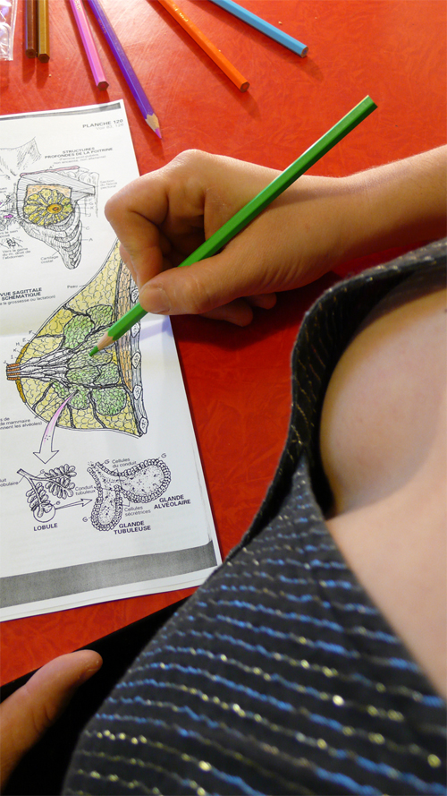

The Breast Piece (praticable) 
photo Yves Mettler "As to nakedness on stage, we thought we had seen it all. But in The Breast Piece, Alice Chauchat & Frédéric Gies renew the gaze and the questions about the body connected to it. Yet Chauchat reveals only her breasts. But, in the style of performance art, she densifies their presence to the extreme. Her tiniest movements—an inflection, a tonic stress—converge towards her breasts, which focus the tension and irradiate her whole body.Thus they seem to detach themselves from the rest of her person, to vibrate, spread out, disappear, unfold, mark the time, insist. Autonomous, they strip from the common images that lock these attributes of femininity to clichés, from the breastfeeding woman to the trailer calendar bimbo. In that sense, this choreographic act, haloed with a slight smile to a totally offbeat music by Ernest Chausson, is eminently political." (Gérard Mayen, Danser)Read a longer text about the work here Credits Concept and Choreography Alice Chauchat & Frédéric Gies Dance Alice Chauchat Lights Design Rut Waldeyer Music Ernest Chausson, Janis Joplin Production management Pauline Roussille / Aire Production Alice Chauchat / Aire and Frédéric Gies Coproduction Tanz im August Supported by Direction Régionale des Affaires Culturelles d‘Île-de-France - ministère de la Culture et de la Communication Thanks to Tanzfabrik Berlin and TanzWerkstatt Berlin Praticable was supported by Fabrik Potsdam in the frame of Tanzplan Potsdam : Artists-in-Residence Praticable was an open collective structure created in 2006 with Frédéric Gies, Frédéric de Carlo, Isabelle Schad and Odile Seitz for the horizontal distribution of movement knowledge and visibility. |